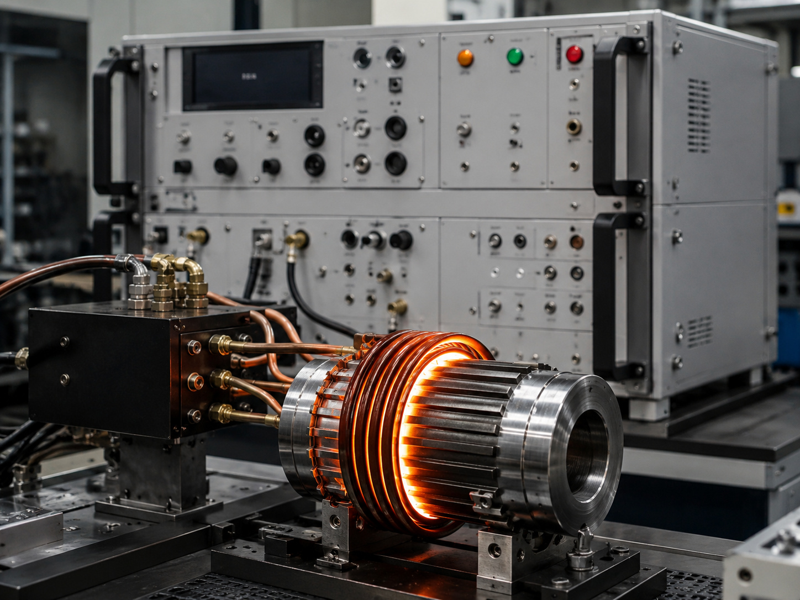
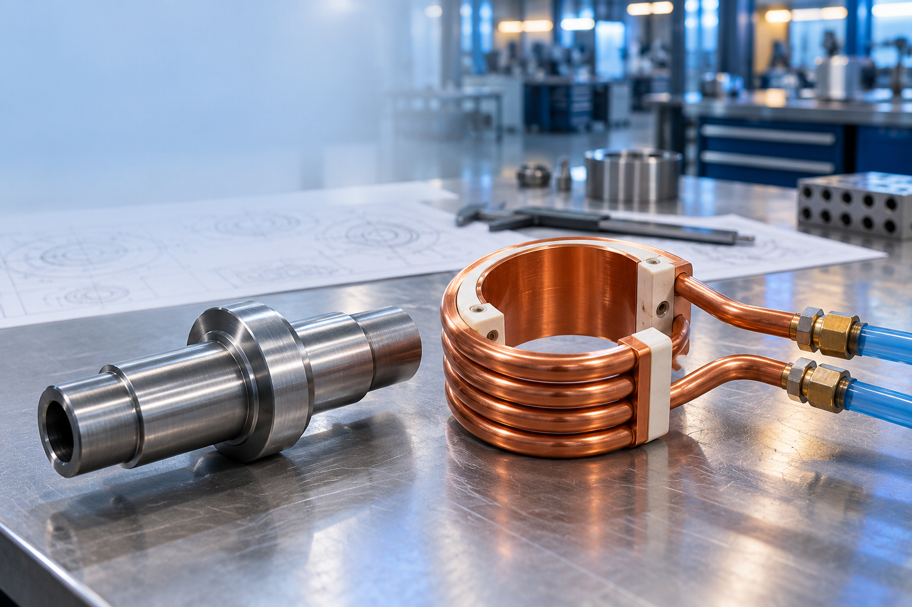
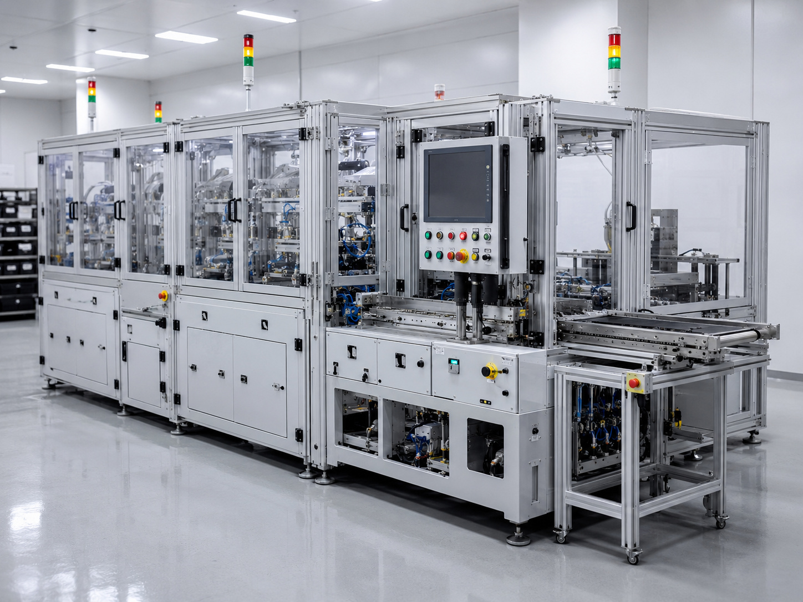
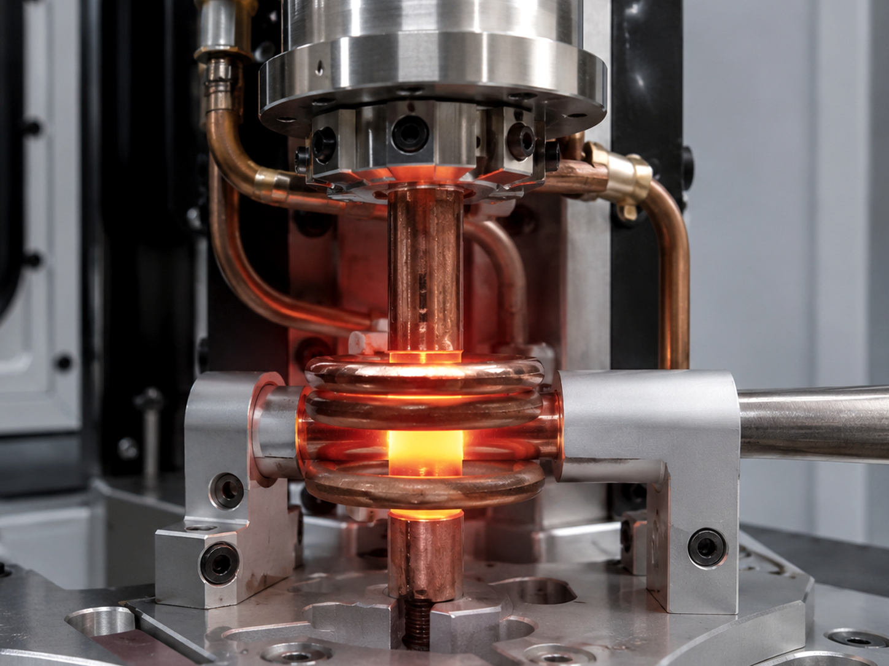
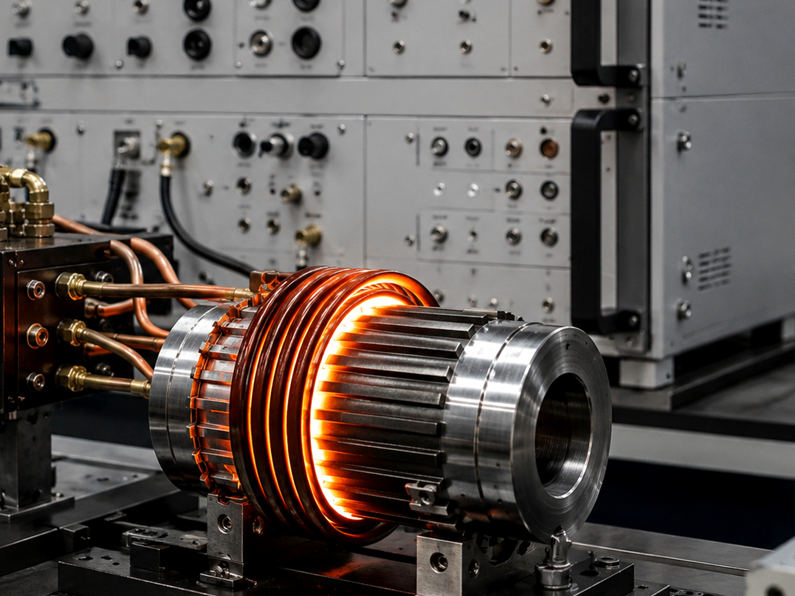
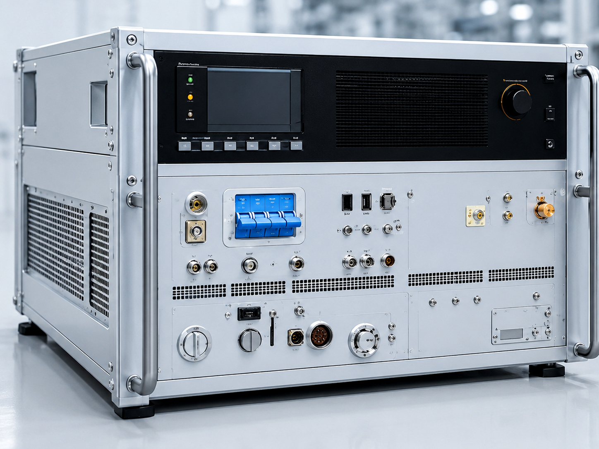
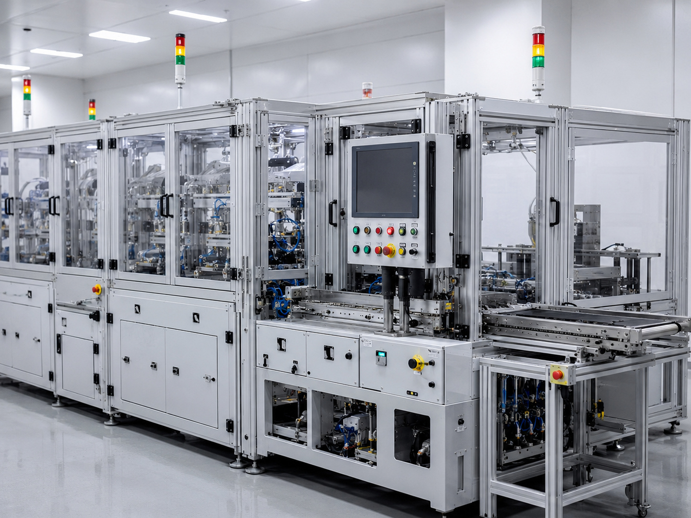
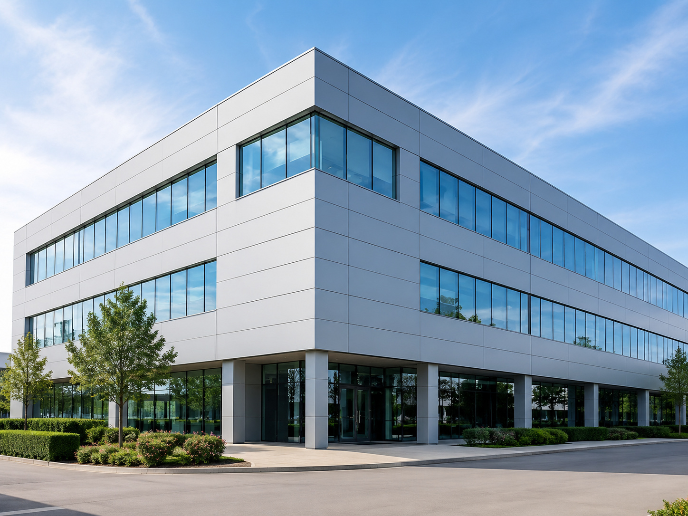

01
고주파 열처리
소재와 형상에 따라 표면 경화, 국부 가열, 템퍼링 공정에 맞춘 장비를 구성합니다.
반복 생산에 필요한 가열 조건을 안정적으로 관리합니다.
공정, 소재, 작업 공간, 자동화 수준에 맞춘 시스템을 구성합니다.
제작·설치·시운전 단계에서 운전 조건과 안전성을 확인합니다.
장비 도입 이후의 운용성과 유지관리까지 고려합니다.
Company Identity
백마고주파는 고주파 유도가열 기술을 기반으로 열처리, 브레이징, 가열기, 코일 및 맞춤 장비를 다루는 산업용 고주파 시스템 전문 기업입니다. 웹사이트는 기존 서비스 구조를 유지하면서 기술 신뢰도, 정밀 설계, 현장 적용성을 전면에 배치했습니다.
회사소개 자세히 보기 →


Solutions
단품 장비 공급부터 공정 통합형 맞춤 시스템까지, 목적에 맞는 열원과 코일, 냉각, 제어 구성을 통합합니다.
소재와 형상에 따라 표면 경화, 국부 가열, 템퍼링 공정에 맞춘 장비를 구성합니다.

CARBIDE, PCD TIP, END MILL 등 접합부 품질과 생산성을 고려한 유도가열 브레이징 시스템을 제안합니다.

전원부, 매칭, 냉각, 인터페이스를 포함한 현장형 가열 시스템입니다.

워크피스 형상과 가열 영역에 맞춘 코일 설계·제작·개선 서비스를 제공합니다.

자동화, 지그, 이송, 안전커버, 데이터 관리까지 현장 흐름에 맞춰 통합합니다.
재질, 형상, 생산량, 가열 깊이, 온도 목표, 설치 조건을 확인합니다.
출력, 주파수, 매칭, 코일, 냉각 라인을 공정 조건에 맞게 설계합니다.
장비, 지그, 전장, 안전 시스템을 제작하고 생산 흐름에 맞춰 통합합니다.
실제 워크 기준으로 가열 균일성, 반복성, 운용성을 점검합니다.
Engineering Process
고주파 설비는 소재, 형상, 가열 부위, 냉각 조건, 작업 속도에 따라 성능이 달라집니다. 백마고주파 사이트 시안은 “정확한 조건 분석 → 코일/전원 설계 → 제작·검증 → 현장 적용”의 전문 프로세스를 전면화했습니다.
기술 페이지 보기Applications
열처리, 가열, 접합, 자동화 공정 등 산업 현장의 목적에 맞게 시스템을 구성합니다.
Project Experience
SHAFT, ROTOR-SHAFT, 조향장치, MOTOR CASE 등 기존 적용 사례를 공정과 장비 구성 중심으로 정리했습니다.
프로젝트 보기
축류 부품의 반복 생산을 위한 고주파 열처리 시스템

자동차 조향 부품에 맞춘 공정 설계

케이스 형상과 가열 영역에 맞춘 유도가열 구성

장비, 지그, 제어, 안전 구조를 통합한 생산 라인
Trust & Quality
홈페이지의 첫 화면부터 품질, 정확도, 현장 적용성, 기술 지원을 강조하고, 문의 전환까지 자연스럽게 연결되도록 UI/UX 흐름을 구성했습니다.

Request a Quote
워크피스, 재질, 목표 온도, 생산량, 설치 공간을 알려주시면 적합한 시스템 구성을 검토할 수 있습니다.